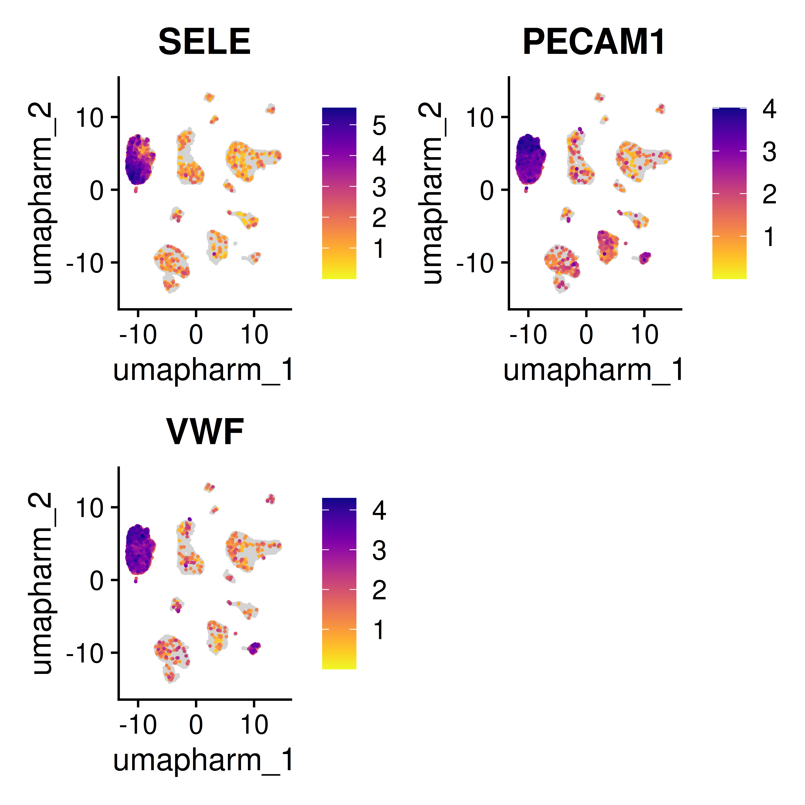
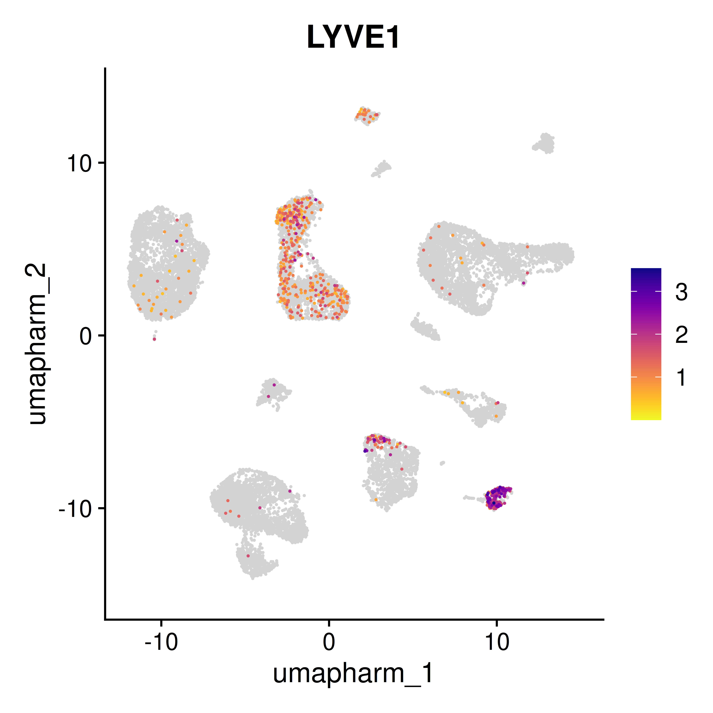
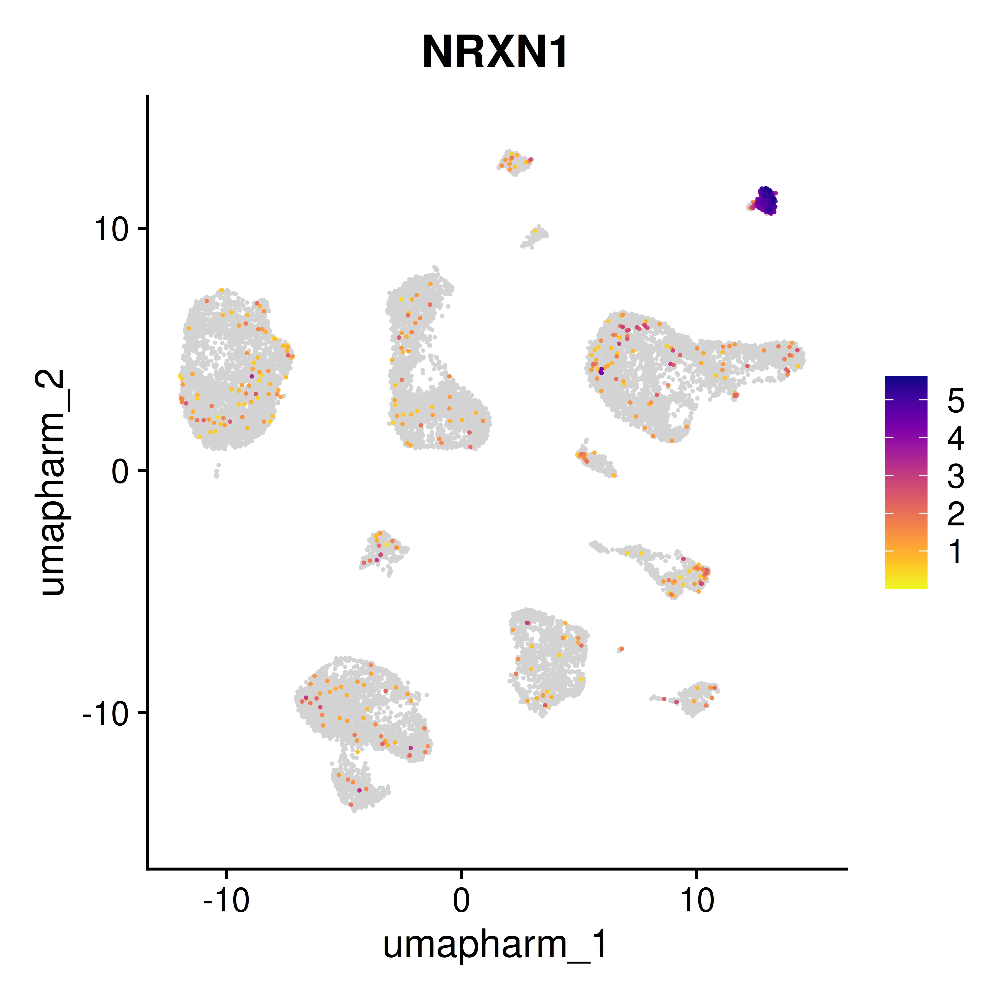
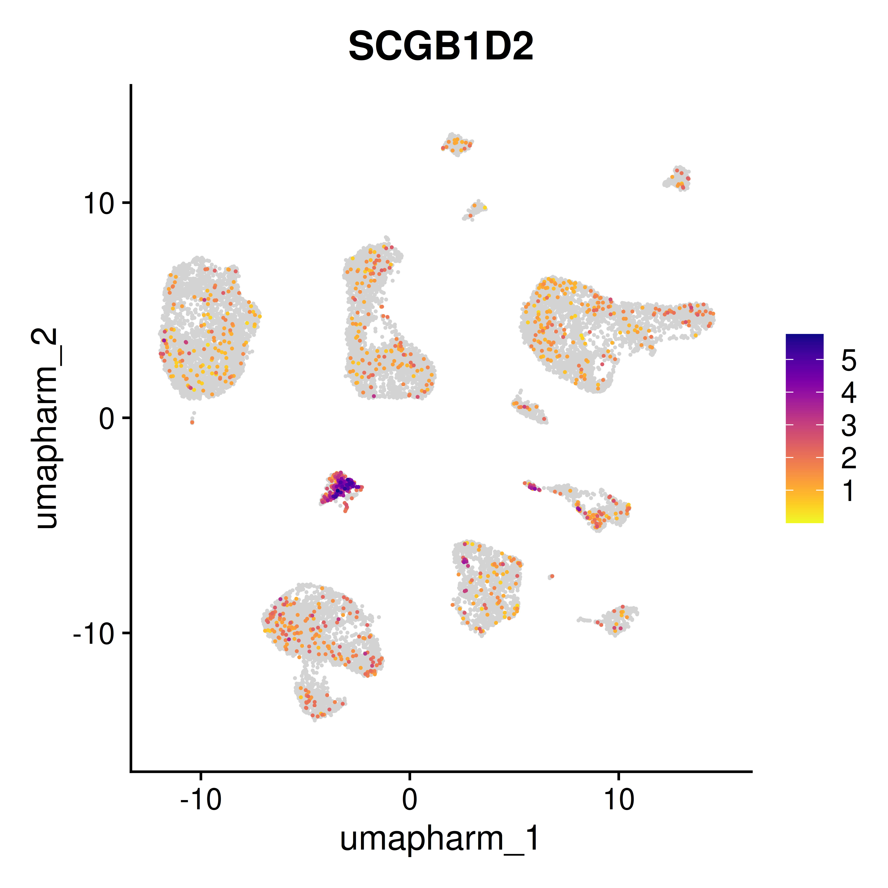
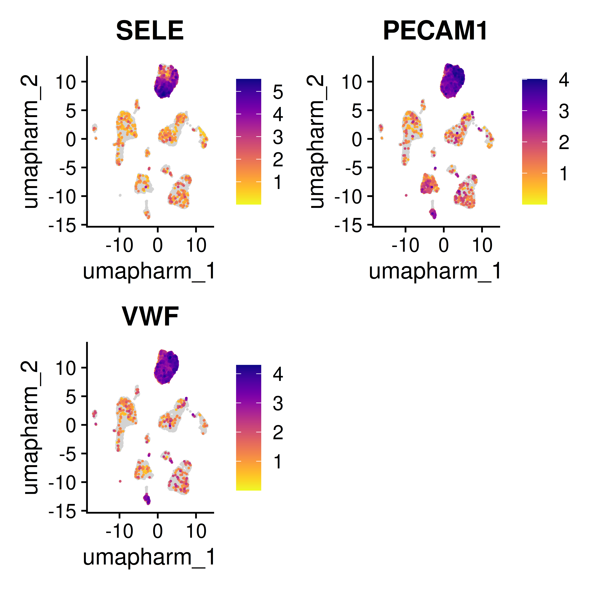
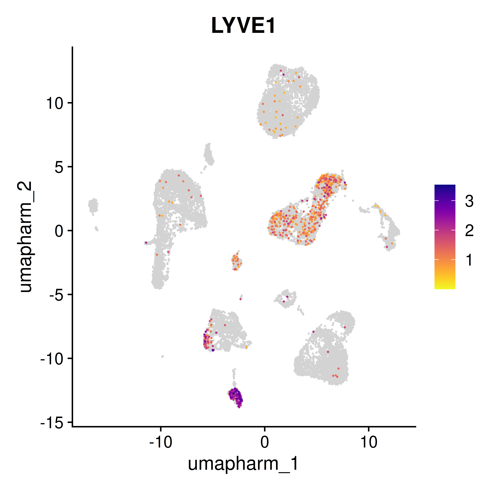
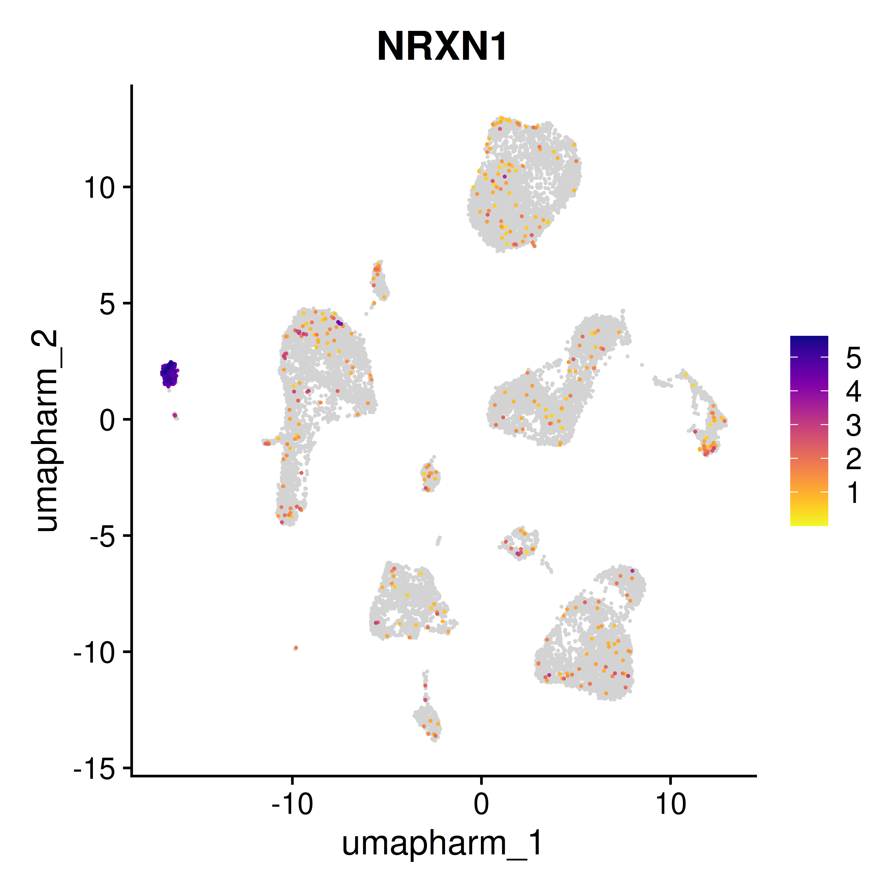
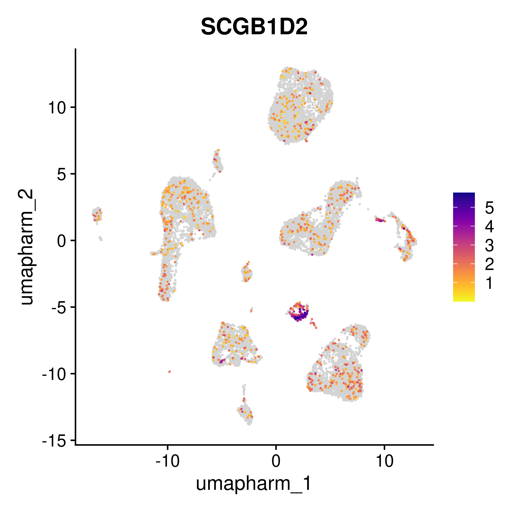

QC
astridhofman7
30 January, 2025
Last updated: 2025-01-30
Checks: 7 0
Knit directory: RESOLVE_skin/
This reproducible R Markdown analysis was created with workflowr (version 1.7.1). The Checks tab describes the reproducibility checks that were applied when the results were created. The Past versions tab lists the development history.
Great! Since the R Markdown file has been committed to the Git repository, you know the exact version of the code that produced these results.
Great job! The global environment was empty. Objects defined in the global environment can affect the analysis in your R Markdown file in unknown ways. For reproduciblity it’s best to always run the code in an empty environment.
The command set.seed(20250127) was run prior to running
the code in the R Markdown file. Setting a seed ensures that any results
that rely on randomness, e.g. subsampling or permutations, are
reproducible.
Great job! Recording the operating system, R version, and package versions is critical for reproducibility.
Nice! There were no cached chunks for this analysis, so you can be confident that you successfully produced the results during this run.
Great job! Using relative paths to the files within your workflowr project makes it easier to run your code on other machines.
Great! You are using Git for version control. Tracking code development and connecting the code version to the results is critical for reproducibility.
The results in this page were generated with repository version 400e97d. See the Past versions tab to see a history of the changes made to the R Markdown and HTML files.
Note that you need to be careful to ensure that all relevant files for
the analysis have been committed to Git prior to generating the results
(you can use wflow_publish or
wflow_git_commit). workflowr only checks the R Markdown
file, but you know if there are other scripts or data files that it
depends on. Below is the status of the Git repository when the results
were generated:
Ignored files:
Ignored: .Rhistory
Ignored: .Rproj.user/
Untracked files:
Untracked: data/HC-01/
Untracked: data/RES-001/
Untracked: data/RES-003/
Untracked: data/RES-004/
Untracked: output/QC/
Note that any generated files, e.g. HTML, png, CSS, etc., are not included in this status report because it is ok for generated content to have uncommitted changes.
These are the previous versions of the repository in which changes were
made to the R Markdown (analysis/QC.Rmd) and HTML
(docs/QC.html) files. If you’ve configured a remote Git
repository (see ?wflow_git_remote), click on the hyperlinks
in the table below to view the files as they were in that past version.
| File | Version | Author | Date | Message |
|---|---|---|---|---|
| html | 3c6421b | astridhofman7 | 2025-01-30 | Build site. |
| Rmd | fc4ddf6 | astridhofman7 | 2025-01-30 | wflow_publish("analysis/QC.Rmd") |
Set-Up
Load the samples & set directories
Inspect the quality of the data before removing doublets or filtering
#Calculate and add the percentage of mitochondrial and ribosomal genes
seurat_list <- lapply(seurat_list, function(seurat_object) {
seurat_object[["percent.mt"]] <- PercentageFeatureSet(seurat_object, pattern = "^MT-")
return(seurat_object)
})
seurat_list <- lapply(seurat_list, function(seurat_object) {
seurat_object[["percent.rp"]] <- PercentageFeatureSet(seurat_object, pattern = "^RP[SL]")
return(seurat_object)
})
seurat_list <- lapply(seurat_list, function(seurat_object) {
seurat_object[["percent.hb"]] <- PercentageFeatureSet(seurat_object, pattern = "^HB[^(P)]")
return(seurat_object)
})#Visualize QC metrics for each sample in seurat list-Violin Plots
qc_plots <- lapply(seurat_list, function(seurat_object) {
VlnPlot(seurat_object, features = c("nFeature_RNA", "nCount_RNA", "percent.mt","percent.rp"), ncol = 4)
})
# Print QC plots
for (i in seq_along(qc_plots)) {
print(qc_plots[[i]])
}
| Version | Author | Date |
|---|---|---|
| 3c6421b | astridhofman7 | 2025-01-30 |

| Version | Author | Date |
|---|---|---|
| 3c6421b | astridhofman7 | 2025-01-30 |

| Version | Author | Date |
|---|---|---|
| 3c6421b | astridhofman7 | 2025-01-30 |

| Version | Author | Date |
|---|---|---|
| 3c6421b | astridhofman7 | 2025-01-30 |
#Visualize QC metrics for each sample in seurat list-Scatter Plots
scatter_plots <- lapply(seurat_list, function(seurat_object) {
FeatureScatter(seurat_object, feature1 = "nCount_RNA", feature2 = "percent.mt") +
FeatureScatter(seurat_object, feature1 = "nCount_RNA", feature2 = "nFeature_RNA") +
FeatureScatter(seurat_object, feature1 = "nCount_RNA", feature2 = "percent.rp")
})
# Print scatter plots
for (i in seq_along(scatter_plots)) {
print(scatter_plots[[i]])
}
| Version | Author | Date |
|---|---|---|
| 3c6421b | astridhofman7 | 2025-01-30 |

| Version | Author | Date |
|---|---|---|
| 3c6421b | astridhofman7 | 2025-01-30 |

| Version | Author | Date |
|---|---|---|
| 3c6421b | astridhofman7 | 2025-01-30 |

| Version | Author | Date |
|---|---|---|
| 3c6421b | astridhofman7 | 2025-01-30 |
#Merge seurat list in a seurat object
# Find common features (genes) across all Seurat objects in the list
common_features <- Reduce(intersect, lapply(seurat_list, rownames))
# Subset each Seurat object to retain only common features
seurat_list <- lapply(seurat_list, function(obj) {
obj <- subset(obj, features = common_features)
return(obj)
})
# Merge the Seurat objects without performing any normalization
merged_seurat <- Reduce(function(x, y) merge(x, y, assay = "RNA"), seurat_list)
merged_seurat$Sample <- merged_seurat$orig.identDoublet Detection & Removal
#ScDblFinder to detect doublets
#Convert you seurat object to a single cell experiment for ScDblFinder
#Your Seurat is a v5 object
#Join layers
merged_new = JoinLayers(merged_seurat)
#Extract raw counts
counts_data <- SeuratObject::GetAssayData(merged_new, slot = "counts")
#Extract metadata (cell-level data)
metadata <- merged_new@meta.data
#Extract feature (gene) information if needed
feature_metadata <- data.frame(row.names = rownames(counts_data))
sce <- SingleCellExperiment::SingleCellExperiment(
assays = list(counts = counts_data), # Add other slots if needed (e.g., "logcounts")
colData = metadata, # Add cell metadata
rowData = feature_metadata # Add feature metadata (optional)
)
#Find Doublets
sce <- scDblFinder(sce, samples="Sample", clusters = TRUE)
table(sce@colData$scDblFinder.class)
singlet doublet
29237 4238 sce <- logNormCounts(sce)Convert back to Seurat Object
#Convert back to a seurat object
merged_new <- as.Seurat(sce, counts = "counts", data = "logcounts")
rm(sce)
merged_new@meta.data[merged_new@meta.data$scDblFinder.class %in% "singlet", "scDblFinder.n"] = paste0("Singlets (n=", table(merged_new$scDblFinder.class)[1], ")")
merged_new@meta.data[merged_new@meta.data$scDblFinder.class %in% "doublet", "scDblFinder.n"] = paste0("Doublets (n=", table(merged_new$scDblFinder.class)[2], ")")
merged_new$scDblFinder.n <- factor(x = merged_new$scDblFinder.n, levels = c(rownames(table(merged_new$scDblFinder.n))[2], rownames(table(merged_new$scDblFinder.n))[1])) Plot the Detected Doublets
p1 <- VlnPlot(merged_new, features = c("nCount_RNA"), split.by = "scDblFinder.n", group.by = "Sample", pt.size = 0, y.max = 150000) + theme(axis.title.x = element_blank()) + NoLegend()
p2 <- VlnPlot(merged_new, features = c("nFeature_RNA"), split.by = "scDblFinder.n", group.by = "Sample", pt.size = 0, y.max = 10000) + theme(axis.title.x = element_blank())
Doublets <- p1 + p2 + plot_layout(ncol = 2)
Doublets
| Version | Author | Date |
|---|---|---|
| 3c6421b | astridhofman7 | 2025-01-30 |
Check the QC Parameters before Removing Doublets for each sample
#Check quality control parameters before removing doublets by sample
#Use the seurat object with joined layers
p1 <- VlnPlot(merged_new, features = "nCount_RNA", group.by = "Sample", pt.size = 0, y.max = 40000) + theme(axis.title.x = element_blank()) + NoLegend()
p2 <- VlnPlot(merged_new, features = "nFeature_RNA", group.by = "Sample", pt.size = 0, y.max = 6000) + theme(axis.title.x = element_blank()) + NoLegend()
p3 <- VlnPlot(merged_new, features = "percent.mt", group.by = "Sample", pt.size = 0) + theme(axis.title.x = element_blank()) + NoLegend()
p4 <- VlnPlot(merged_new, features = "percent.rp", group.by = "Sample", pt.size = 0) + theme(axis.title.x = element_blank()) + NoLegend()
before_removal <- p1 + p2 + p3 + p4 + plot_layout(ncol = 2)
before_removal
| Version | Author | Date |
|---|---|---|
| 3c6421b | astridhofman7 | 2025-01-30 |
Doublet Removal
#Remove Doublets
nodoublets <- subset(x = merged_new, subset = scDblFinder.class == "singlet")
table(nodoublets@meta.data$scDblFinder.class)
singlet doublet
29237 0 #Check quality control parameters after removing doublets by sample
p1 <- VlnPlot(nodoublets, features = "nCount_RNA", group.by = "Sample", pt.size = 0, y.max = 40000) + theme(axis.title.x = element_blank()) + NoLegend()
p2 <- VlnPlot(nodoublets, features = "nFeature_RNA", group.by = "Sample", pt.size = 0, y.max = 6000) + theme(axis.title.x = element_blank()) + NoLegend()
p3 <- VlnPlot(nodoublets, features = "percent.mt", group.by = "Sample", pt.size = 0) + theme(axis.title.x = element_blank()) + NoLegend()
p4 <- VlnPlot(nodoublets, features = "percent.rp", group.by = "Sample", pt.size = 0) + theme(axis.title.x = element_blank()) + NoLegend()
after_removal <- p1 + p2 + p3 + p4 + plot_layout(ncol = 2)
after_removal
| Version | Author | Date |
|---|---|---|
| 3c6421b | astridhofman7 | 2025-01-30 |
Checking the Genes & Percent MT and how these correlate
nodoublets@meta.data %>%
ggplot(aes(x = nCount_RNA, y = nFeature_RNA, color = percent.mt)) +
geom_point(alpha = 0.6) +
scale_color_gradient(low = "lightgreen", high = "darkgreen") +
stat_smooth(method = "lm", aes(group = Sample), color = "black") + # Add `group = Group` to smooth
scale_x_log10() +
scale_y_log10() +
theme_classic() +
xlab('Number of UMIs (n_Counts)') +
ylab('Number of Genes (n_Feature)') +
theme(axis.text.x=element_text(size=13), axis.text.y=element_text(size=15),
axis.title = element_text(size = 22),
plot.title = element_text(size = 24),
legend.title = element_text(size = 19),
legend.text = element_text(size = 18)) +
facet_wrap(~Sample)
| Version | Author | Date |
|---|---|---|
| 3c6421b | astridhofman7 | 2025-01-30 |
nodoublets@meta.data %>%
ggplot(aes(x = nCount_RNA, y = nFeature_RNA, color = percent.mt)) +
geom_point(alpha = 0.6) +
scale_color_gradient(low = "lightblue", high = "darkblue") +
stat_smooth(method = "lm", color = "black") + # Add `group = Group` to smooth
scale_x_log10() +
scale_y_log10() +
theme_classic() +
xlab('Number of UMIs (n_Counts)') +
ylab('Number of Genes (n_Feature)') +
theme(axis.text.x=element_text(size=13), axis.text.y=element_text(size=15),
axis.title = element_text(size = 22),
plot.title = element_text(size = 24),
legend.title = element_text(size = 19),
legend.text = element_text(size = 18))
| Version | Author | Date |
|---|---|---|
| 3c6421b | astridhofman7 | 2025-01-30 |
Filtering
#Filtering based on number of counts, features and mitochondrial percentage
# Split Seurat object by sample
seurat_list <- SplitObject(nodoublets, split.by = "sample")
quantiles_list <- list()
# Define the list of sample names
samples <- unique(nodoublets@meta.data$sample)
# Split the object by "Sample"
seurat_list <- SplitObject(nodoublets, split.by = "sample")
# Initialize a list to store quantile information
quantiles_list <- list()
# Loop through each sample
for (sample in samples) {
seu1 <- seurat_list[[sample]]
# Calculate quantiles for the current sample
quantile_df <- data.frame(
percent_mt_q90 = quantile(seu1@meta.data$percent.mt, probs = 0.90),
percent_mt_q10 = quantile(seu1@meta.data$percent.mt, probs = 0.10),
nCounts_q90 = quantile(seu1@meta.data$nCount_RNA, probs = 0.90),
nCounts_q10 = quantile(seu1@meta.data$nCount_RNA, probs = 0.10),
nFeature_q90 = quantile(seu1@meta.data$nFeature_RNA, probs = 0.90),
nFeature_q10 = quantile(seu1@meta.data$nFeature_RNA, probs = 0.10),
Ncell_before_filtering = ncol(seu1)
)
# Store the quantiles for the current sample
quantiles_list[[sample]] <- quantile_df
}
# Combine the quantiles list into a single data frame
quantiles_df <- bind_rows(quantiles_list, .id = "Sample")
# Gather measures into a long format for easier plotting
quantiles_long <- quantiles_df %>%
pivot_longer(cols = -Sample,
names_to = "Metric",
values_to = "Value")
# Function to plot violins for each measure
generate_violin_plots <- function(seurat_list, measures) {
plots <- list()
for (measure in measures) {
# Combine meta.data from all Seurat objects into one data frame
all_data <- do.call(rbind, lapply(names(seurat_list), function(sample) {
data.frame(Sample = sample, Value = seurat_list[[sample]]@meta.data[[measure]])
}))
# Generate the violin plot
p <- ggplot(all_data, aes(x = Sample, y = Value, fill = Sample)) +
geom_violin(alpha = 0.6) +
geom_hline(data = quantiles_long %>%
filter(grepl(measure, Metric)),
aes(yintercept = Value, linetype = Metric),
color = "red") +
scale_linetype_manual(values = c("dashed", "solid")) +
labs(title = paste("Violin Plot of", measure),
x = "Sample", y = measure) +
theme_minimal()
# Save the plot in the list
plots[[measure]] <- p
}
return(plots)
}
# Define the measures to plot
measures <- c("percent.mt", "nCount_RNA", "nFeature_RNA")
# Generate plots
violin_plots <- generate_violin_plots(seurat_list, measures)
# Print all plots
for (measure in names(violin_plots)) {
print(violin_plots[[measure]])
}
| Version | Author | Date |
|---|---|---|
| 3c6421b | astridhofman7 | 2025-01-30 |

| Version | Author | Date |
|---|---|---|
| 3c6421b | astridhofman7 | 2025-01-30 |

| Version | Author | Date |
|---|---|---|
| 3c6421b | astridhofman7 | 2025-01-30 |
rm(quantile_df)
# Initialize a list to store the filtered Seurat objects
filtered_seu_list <- list()
# Loop through each sample and apply the filtering criteria
for (sample in samples) {
# Extract the corresponding quantiles for the sample
sample_quantiles <- quantiles_list[[sample]]
seu1 <- seurat_list[[sample]]
# Apply the filtering criteria
seu1 <- subset(seu1, subset = nFeature_RNA > sample_quantiles$nFeature_q10 &
nFeature_RNA < sample_quantiles$nFeature_q90 &
nFeature_RNA > 300 &
percent.mt < sample_quantiles$percent_mt_q90 &
percent.mt < 15 &
percent.mt > 0.5 &
nCount_RNA > 500 &
nCount_RNA > sample_quantiles$nCounts_q10 &
nCount_RNA < sample_quantiles$nCounts_q90)
# Add the filtered subset to the list
filtered_seu_list[[sample]] <- seu1
}#Merge filtered list to a seurat object
filtered_seurat <- Reduce(function(x, y) merge(x, y, assay = "RNA"), filtered_seu_list)#Check quality control parameters after filtering
p1 <- VlnPlot(filtered_seurat, features = "nCount_RNA", group.by = "Sample", pt.size = 0, y.max = 15000) + theme(axis.title.x = element_blank()) + NoLegend()
p2 <- VlnPlot(filtered_seurat, features = "nFeature_RNA", group.by = "Sample", pt.size = 0, y.max = 6000) + theme(axis.title.x = element_blank()) + NoLegend()
p3 <- VlnPlot(filtered_seurat, features = "percent.mt", group.by = "Sample", pt.size = 0) + theme(axis.title.x = element_blank()) + NoLegend()
p4 <- VlnPlot(filtered_seurat, features = "percent.rp", group.by = "Sample", pt.size = 0) + theme(axis.title.x = element_blank()) + NoLegend()
filtered_VlnPlots <- p1 + p2 + p3 + p4 + plot_layout(ncol = 2)
filtered_VlnPlots
| Version | Author | Date |
|---|---|---|
| 3c6421b | astridhofman7 | 2025-01-30 |
#Print a table with filtered samples
table(filtered_seurat$Sample)
HC-01 RES-001 RES-003 RES-004
3914 1392 3223 10051 filtered_seurat@meta.data %>%
ggplot(aes(x = nCount_RNA, y = nFeature_RNA, color = percent.mt)) +
geom_point(alpha = 0.6) +
scale_color_gradient(low = "lightgreen", high = "darkgreen") +
stat_smooth(method = "lm", color = "black") + # Add `group = Group` to smooth
scale_x_log10() +
scale_y_log10() +
theme_classic() +
xlab('Number of UMIs (n_Counts)') +
ylab('Number of Genes (n_Feature)') +
theme(axis.text.x=element_text(size=13), axis.text.y=element_text(size=15),
axis.title = element_text(size = 22),
plot.title = element_text(size = 24),
legend.title = element_text(size = 19),
legend.text = element_text(size = 18))
| Version | Author | Date |
|---|---|---|
| 3c6421b | astridhofman7 | 2025-01-30 |
#Filtering bad cells
filtered_seurat <- subset(filtered_seurat, features = rownames(filtered_seurat)[rowSums(filtered_seurat[["originalexp"]]@counts > 0) >= 5])#Check quality control parameters after filtering
p1 <- VlnPlot(filtered_seurat, features = "nCount_RNA", group.by = "Sample", pt.size = 0, y.max = 15000) + theme(axis.title.x = element_blank()) + NoLegend()
p2 <- VlnPlot(filtered_seurat, features = "nFeature_RNA", group.by = "Sample", pt.size = 0, y.max = 6000) + theme(axis.title.x = element_blank()) + NoLegend()
p3 <- VlnPlot(filtered_seurat, features = "percent.mt", group.by = "Sample", pt.size = 0) + theme(axis.title.x = element_blank()) + NoLegend()
p4 <- VlnPlot(filtered_seurat, features = "percent.rp", group.by = "Sample", pt.size = 0) + theme(axis.title.x = element_blank()) + NoLegend()
filtered_VlnPlots <- p1 + p2 + p3 + p4 + plot_layout(ncol = 2)
filtered_VlnPlots
| Version | Author | Date |
|---|---|---|
| 3c6421b | astridhofman7 | 2025-01-30 |
#Print a table with filtered samples
table(filtered_seurat$Sample)
HC-01 RES-001 RES-003 RES-004
3914 1392 3223 10051 Cell Cycle Genes
#RES-004 still looks like it has quite some cells with low nCount and nFeature, which could be indicative of low quality cells. Let's take a closer look at some factors that could affect this
# Use built-in cell cycle markers for human
s.genes <- cc.genes$s.genes
g2m.genes <- cc.genes$g2m.genes
# Apply cell cycle scoring to the Seurat object
filtered_seurat <- CellCycleScoring(filtered_seurat,
s.features = s.genes,
g2m.features = g2m.genes,
set.ident = TRUE)
# Visualize the cell cycle scores
VlnPlot(filtered_seurat, features = c("S.Score", "G2M.Score"), group.by = "Sample", pt.size= 0)
| Version | Author | Date |
|---|---|---|
| 3c6421b | astridhofman7 | 2025-01-30 |
#Conclusion: doesn't look like the cell cycle genes are significantly affecting the expression.
#Continue with the normalization, etc. to see if we can check expression of dying cellsPost-Filtering
Normalization
#Normalization
filtered_seurat <- NormalizeData(filtered_seurat, normalization.method = "LogNormalize")
gene_expression <- apply(LayerData(filtered_seurat,layer="data"),1,mean)
names(gene_expression) <- rownames(data)
gene_expression <- sort(gene_expression, decreasing = TRUE)
head(gene_expression, n=50) [1] 5.769343 4.110311 4.038826 3.999884 3.892192 3.716666 3.617673 3.552378
[9] 3.522796 3.468688 3.459626 3.401461 3.379276 3.335826 3.309883 3.104099
[17] 3.097061 3.091467 3.064216 3.056501 3.039787 3.002487 2.944915 2.906981
[25] 2.895787 2.890804 2.858172 2.850120 2.804916 2.764632 2.761121 2.736172
[33] 2.717690 2.702373 2.699869 2.642836 2.602667 2.600368 2.588715 2.587696
[41] 2.570048 2.559027 2.533885 2.533147 2.471823 2.449344 2.441527 2.434462
[49] 2.428582 2.422556Find Variable Features
#Find Variable Features
FindVariableFeatures(filtered_seurat) -> filtered_seurat
HVFInfo(filtered_seurat) %>%
arrange(desc(variance.standardized)) %>%
head(n=20) mean variance variance.standardized
KRT10 2.12954790 622.109111 38.64670
KRT1 0.92798708 146.060802 37.00654
CCL21 0.78223897 110.553902 32.24042
DMKN 0.62825619 57.683802 29.06165
SCGB2A2 2.03616792 765.773814 29.03656
KRTDAP 0.38153929 35.862117 27.97676
DCT 0.37147470 38.651923 27.19323
MUCL1 1.65000000 821.229396 26.17906
KRT17 0.39881593 34.961880 23.50979
DCD 3.22217438 6888.518481 22.54568
NRXN1 0.43950484 25.788955 21.40014
MPZ 0.09628633 4.438061 18.23330
IGLC2 0.30269107 137.915263 17.79042
COCH 2.10726588 265.227903 17.78267
PIP 0.12707212 12.684051 17.77788
KRT15 0.60263724 34.055292 17.45437
IL1B 1.03250807 74.562913 17.23448
DES 0.22029064 7.404992 16.51925
KRT14 1.00333692 67.472081 16.38602
S100A2 0.35010764 21.651733 16.13788HVFInfo(filtered_seurat) %>%
arrange(desc(variance.standardized)) %>%
mutate(index=1:n()) %>%
ggplot(aes(x=index, y=variance.standardized)) +
geom_line() +
scale_x_log10() +
geom_vline(xintercept = 500, colour="red2")
| Version | Author | Date |
|---|---|---|
| 3c6421b | astridhofman7 | 2025-01-30 |
FindVariableFeatures(
filtered_seurat,
selection.method = "vst",
nfeatures=500
) -> filtered_seurat
filtered_seurat <- FindVariableFeatures(filtered_seurat, selection.method = "mean.var.plot", nfeatures = 2000)
filtered_seurat <- FindVariableFeatures(filtered_seurat, selection.method = "dispersion", nfeatures = 2000)
top_variable_features <- head(VariableFeatures(filtered_seurat), 10)
print(top_variable_features) [1] "IGLC2" "DCD" "IGKC" "HBB" "IGHA1" "MUCL1" "SCGB2A2"
[8] "JCHAIN" "APOD" "KRT10" Scaling, PCA, Elbow Plot
#Scale data
filtered_seurat <- ScaleData(filtered_seurat, vars.to.regress = "percent.mt")
#PCA
filtered_seurat <- RunPCA(filtered_seurat, npcs = 50, verbose = FALSE)
#Elbow Plot
ElbowPlot(filtered_seurat, ndims=50)
| Version | Author | Date |
|---|---|---|
| 3c6421b | astridhofman7 | 2025-01-30 |
#Choose 25 PCsClustering without integration first
#Clustree
clustree(filtered_seurat)
| Version | Author | Date |
|---|---|---|
| 3c6421b | astridhofman7 | 2025-01-30 |
Dimplot / Resolutions
DimPlot(filtered_seurat, reduction = "umap", shuffle = T,
group.by = c("originalexp_snn_res.0.1", "originalexp_snn_res.0.2", "originalexp_snn_res.0.3", "originalexp_snn_res.0.4"), ncol = 2)
| Version | Author | Date |
|---|---|---|
| 3c6421b | astridhofman7 | 2025-01-30 |
Dimplot / Sample
DimPlot(filtered_seurat, reduction = "umap", shuffle = T,
group.by = c("sample"))
| Version | Author | Date |
|---|---|---|
| 3c6421b | astridhofman7 | 2025-01-30 |
#Clearly needs to be integrated Feature plots: Mitochondrial, Ribosomal, Hemoglobin
# hemoglobin genes (but not HBP)
filtered_seurat <- Seurat::PercentageFeatureSet(filtered_seurat,
pattern = "^HB[^(P)]",
col.name = "percent.hb")
FeaturePlot_scCustom(filtered_seurat, reduction = "umap", features = c("percent.mt", "percent.rp", "percent.hb"))
| Version | Author | Date |
|---|---|---|
| 3c6421b | astridhofman7 | 2025-01-30 |
#No red flags hereClustering with Integration
Harmony Integration
filtered_seurat[["originalexp"]] <- split(filtered_seurat[["originalexp"]], f = filtered_seurat$sample)
filtered_seurat_harmony <- IntegrateLayers(
object = filtered_seurat, method = HarmonyIntegration, npcs = 25,
orig.reduction = "pca", new.reduction = "harmony", max.inter.harmony = 10,
verbose = TRUE
)filtered_seurat_harmony <- RunUMAP(filtered_seurat_harmony, reduction = "harmony", dims = 1:25, reduction.name = "umap.harm")
filtered_seurat_harmony <- FindNeighbors(filtered_seurat_harmony, reduction = "harmony", dims = 1:25)
resolution.range <- seq(from = 0, to = 0.8, by = 0.1)
filtered_seurat_harmony <- FindClusters(object = filtered_seurat_harmony, resolution = resolution.range)Modularity Optimizer version 1.3.0 by Ludo Waltman and Nees Jan van Eck
Number of nodes: 18580
Number of edges: 650123
Running Louvain algorithm...
Maximum modularity in 10 random starts: 1.0000
Number of communities: 1
Elapsed time: 2 seconds
Modularity Optimizer version 1.3.0 by Ludo Waltman and Nees Jan van Eck
Number of nodes: 18580
Number of edges: 650123
Running Louvain algorithm...
Maximum modularity in 10 random starts: 0.9822
Number of communities: 12
Elapsed time: 2 seconds
Modularity Optimizer version 1.3.0 by Ludo Waltman and Nees Jan van Eck
Number of nodes: 18580
Number of edges: 650123
Running Louvain algorithm...
Maximum modularity in 10 random starts: 0.9686
Number of communities: 15
Elapsed time: 2 seconds
Modularity Optimizer version 1.3.0 by Ludo Waltman and Nees Jan van Eck
Number of nodes: 18580
Number of edges: 650123
Running Louvain algorithm...
Maximum modularity in 10 random starts: 0.9578
Number of communities: 16
Elapsed time: 2 seconds
Modularity Optimizer version 1.3.0 by Ludo Waltman and Nees Jan van Eck
Number of nodes: 18580
Number of edges: 650123
Running Louvain algorithm...
Maximum modularity in 10 random starts: 0.9483
Number of communities: 18
Elapsed time: 2 seconds
Modularity Optimizer version 1.3.0 by Ludo Waltman and Nees Jan van Eck
Number of nodes: 18580
Number of edges: 650123
Running Louvain algorithm...
Maximum modularity in 10 random starts: 0.9400
Number of communities: 19
Elapsed time: 2 seconds
Modularity Optimizer version 1.3.0 by Ludo Waltman and Nees Jan van Eck
Number of nodes: 18580
Number of edges: 650123
Running Louvain algorithm...
Maximum modularity in 10 random starts: 0.9329
Number of communities: 21
Elapsed time: 2 seconds
Modularity Optimizer version 1.3.0 by Ludo Waltman and Nees Jan van Eck
Number of nodes: 18580
Number of edges: 650123
Running Louvain algorithm...
Maximum modularity in 10 random starts: 0.9258
Number of communities: 22
Elapsed time: 2 seconds
Modularity Optimizer version 1.3.0 by Ludo Waltman and Nees Jan van Eck
Number of nodes: 18580
Number of edges: 650123
Running Louvain algorithm...
Maximum modularity in 10 random starts: 0.9188
Number of communities: 23
Elapsed time: 2 secondsclustree(filtered_seurat_harmony)
| Version | Author | Date |
|---|---|---|
| 3c6421b | astridhofman7 | 2025-01-30 |
p1 <- DimPlot(
filtered_seurat_harmony,
reduction = "umap.harm",
group.by = c("originalexp_snn_res.0.1", "originalexp_snn_res.0.2", "originalexp_snn_res.0.3", "originalexp_snn_res.0.4", "originalexp_snn_res.0.5", "originalexp_snn_res.0.6"),
combine = FALSE, label.size = 2
)
wrap_plots(p1, ncol = 3, byrow = F)
| Version | Author | Date |
|---|---|---|
| 3c6421b | astridhofman7 | 2025-01-30 |
DimPlot(
filtered_seurat_harmony,
reduction = "umap.harm",
group.by = c("sample"),
combine = FALSE, label.size = 2)[[1]]
| Version | Author | Date |
|---|---|---|
| 3c6421b | astridhofman7 | 2025-01-30 |
DimPlot(
filtered_seurat_harmony,
reduction = "umap.harm",
split.by = c("sample"),
combine = FALSE, label.size = 2)[[1]]
| Version | Author | Date |
|---|---|---|
| 3c6421b | astridhofman7 | 2025-01-30 |
Set the resolution
#Will set at 0.6 for now and revisit later in case it doesn't make sense
filtered_seurat_harmony$seurat_clusters <- filtered_seurat_harmony$originalexp_snn_res.0.5
filtered_seurat_harmony <- Seurat::SetIdent(filtered_seurat_harmony, value = filtered_seurat_harmony$originalexp_snn_res.0.5)
table(filtered_seurat_harmony$seurat_clusters)
0 1 2 3 4 5 6 7 8 9 10 11 12 13 14 15
2806 2552 2192 1960 1450 1088 1033 881 780 748 724 546 357 333 295 275
16 17 18
259 169 132 DimPlot(
filtered_seurat_harmony,
reduction = "umap.harm",
label = T, label.size = 5, repel = T)
| Version | Author | Date |
|---|---|---|
| 3c6421b | astridhofman7 | 2025-01-30 |
Rejoin Layers
filtered_seurat_harmony <- JoinLayers(filtered_seurat_harmony)Annotation (https://www.nature.com/articles/s41467-021-24110-y/figures/1)
Markers
Endo <- c("SELE", "PECAM1","VWF")
Fib <- c("COL1A1", "COL1A2", "COL3A1")
SMC <- c("TAGLN", "ACTA2", "TPM2")
KRT <- c("KRT14", "KRT1", "KRT10", "KRT5")
IMM <- c("LYZ", "HLA-DRA")
LYME <- c("COL21", "LYVE1")
NEU <- c("NRXN1")
SGC <- c("SCGB1B2P", "SCGB1D2")
Mela <- c("TYRP1", "PMEL")
Tcell <- c("CCR7", "CD8A", "IL7R", "CD3E")Endothelial Cells
#VlnPlot_scCustom(filtered_seurat_harmony, features = Endo, pt.size = 0)
FeaturePlot_scCustom(filtered_seurat_harmony, features = Endo, reduction = "umap.harm")
| Version | Author | Date |
|---|---|---|
| 3c6421b | astridhofman7 | 2025-01-30 |
#VlnPlot_scCustom(filtered_seurat_harmony, features = Fib, pt.size = 0)
FeaturePlot_scCustom(filtered_seurat_harmony, features = Fib, reduction = "umap.harm")
| Version | Author | Date |
|---|---|---|
| 3c6421b | astridhofman7 | 2025-01-30 |
#VlnPlot_scCustom(filtered_seurat_harmony, features = SMC, pt.size = 0)
FeaturePlot_scCustom(filtered_seurat_harmony, features = SMC, reduction = "umap.harm")
| Version | Author | Date |
|---|---|---|
| 3c6421b | astridhofman7 | 2025-01-30 |
#VlnPlot_scCustom(filtered_seurat_harmony, features = KRT, pt.size = 0)
FeaturePlot_scCustom(filtered_seurat_harmony, features = KRT, reduction = "umap.harm")
| Version | Author | Date |
|---|---|---|
| 3c6421b | astridhofman7 | 2025-01-30 |
Immune Cells
#VlnPlot_scCustom(filtered_seurat_harmony, features = IMM, pt.size = 0)
FeaturePlot_scCustom(filtered_seurat_harmony, features = IMM, reduction = "umap.harm")
| Version | Author | Date |
|---|---|---|
| 3c6421b | astridhofman7 | 2025-01-30 |
Lymphatic Endothelial Cells
#VlnPlot_scCustom(filtered_seurat_harmony, features = LYME, pt.size = 0)
FeaturePlot_scCustom(filtered_seurat_harmony, features = LYME, reduction = "umap.harm")
| Version | Author | Date |
|---|---|---|
| 3c6421b | astridhofman7 | 2025-01-30 |
Neuronal Cells
#VlnPlot_scCustom(filtered_seurat_harmony, features = NEU, pt.size = 0)
FeaturePlot_scCustom(filtered_seurat_harmony, features = NEU, reduction = "umap.harm")
| Version | Author | Date |
|---|---|---|
| 3c6421b | astridhofman7 | 2025-01-30 |
Sweat Gland Cells
#VlnPlot_scCustom(filtered_seurat_harmony, features = SGC, pt.size = 0)
FeaturePlot_scCustom(filtered_seurat_harmony, features = SGC, reduction = "umap.harm")
| Version | Author | Date |
|---|---|---|
| 3c6421b | astridhofman7 | 2025-01-30 |
Melanocytes
#VlnPlot_scCustom(filtered_seurat_harmony, features = Mela, pt.size = 0)
FeaturePlot_scCustom(filtered_seurat_harmony, features = Mela, reduction = "umap.harm")
| Version | Author | Date |
|---|---|---|
| 3c6421b | astridhofman7 | 2025-01-30 |
T Cells
#VlnPlot_scCustom(filtered_seurat_harmony, features = Tcell, pt.size = 0)
FeaturePlot_scCustom(filtered_seurat_harmony, features = Tcell, reduction = "umap.harm")
| Version | Author | Date |
|---|---|---|
| 3c6421b | astridhofman7 | 2025-01-30 |
What is cluster 17
# Create a vector of colors for all clusters
# Use "gray" for all clusters except "17", which will be "red"
all_clusters <- levels(Idents(filtered_seurat_harmony))
cluster_colors <- ifelse(all_clusters == "17", "red", "gray")
# Generate the UMAP plot
DimPlot(filtered_seurat_harmony,
reduction = "umap",
group.by = "seurat_clusters",
label = TRUE) +
scale_color_manual(values = setNames(cluster_colors, all_clusters)) +
ggtitle("Highlighting Cluster 17") +
theme(legend.position = "none")
| Version | Author | Date |
|---|---|---|
| 3c6421b | astridhofman7 | 2025-01-30 |
# Assuming 'seurat_object' is your Seurat object
# Find markers for cluster 17
cluster_17_markers <- FindMarkers(filtered_seurat_harmony, ident.1 = "17")
# Check the number of markers
n_markers_cluster_17 <- nrow(cluster_17_markers)
print(paste("Number of markers for cluster 17:", n_markers_cluster_17))[1] "Number of markers for cluster 17: 12999"Remove Cluster 17
clusters_to_keep <- c("0", "1", "2", "3", "4", "5", "6", "7", "8", "9", "10", "11", "12", "13", "14", "15", "16", "18")
Idents(filtered_seurat_harmony) <- filtered_seurat_harmony$originalexp_snn_res.0.5
# Subset the Seurat object based on the clusters
filtered_seurat_harmony <- subset(filtered_seurat_harmony, idents = clusters_to_keep)
table(Idents(filtered_seurat_harmony))
0 1 2 3 4 5 6 7 8 9 10 11 12 13 14 15
2806 2552 2192 1960 1450 1088 1033 881 780 748 724 546 357 333 295 275
16 18
259 132 DimPlot(filtered_seurat_harmony, reduction = "umap.harm", label = T, label.size = 5)
| Version | Author | Date |
|---|---|---|
| 3c6421b | astridhofman7 | 2025-01-30 |
table(filtered_seurat_harmony$sample)
HC-01 RES-001 RES-003 RES-004
3869 1375 3212 9955 Reclustering the UMAP without Cluster 17
[1] 5.769845 4.110192 4.034877 3.995514 3.889435 3.713406 3.617999 3.548289
[9] 3.521548 3.476094 3.455384 3.396733 3.375168 3.340195 3.307009 3.105272
[17] 3.093830 3.092919 3.063802 3.056635 3.038766 3.002021 2.964834 2.905849
[25] 2.896587 2.888253 2.868819 2.848334 2.803974 2.766225 2.761081 2.735481
[33] 2.717120 2.700684 2.698416 2.641731 2.602220 2.599310 2.595588 2.587888
[41] 2.565924 2.560303 2.534559 2.534535 2.475862 2.448697 2.437372 2.433714
[49] 2.428038 2.419250Find Variable Features
mean variance variance.expected variance.standardized
KRT10 2.14741187 627.783157 15.3916269 38.51029
KRT1 0.93623377 147.393870 3.6486038 36.89782
CCL21 0.78914779 111.563252 2.7393419 32.19302
DMKN 0.63266525 58.209164 1.9155804 29.11037
SCGB2A2 2.05192548 772.765690 14.2424993 28.97613
KRTDAP 0.38493292 36.189950 0.9219044 27.98798
MUCL1 1.66286459 828.745812 9.9226738 26.13311
KRT17 0.40128184 35.273185 0.9780743 23.56662
DCD 3.24860138 6951.670025 30.8930108 22.52308
NRXN1 0.44348487 26.023897 1.1262578 21.40934
MPZ 0.09711585 4.478672 0.1548517 18.31633
IGLC2 0.30546956 139.180448 0.6657519 17.78864
PIP 0.12807561 12.800217 0.2135477 17.77964
COCH 2.12606594 267.623161 15.1318148 17.68612
KRT15 0.60789745 34.364607 1.7996709 17.44353
IL1B 1.04182282 75.237686 4.3846790 17.15922
DES 0.22231275 7.472519 0.4329890 16.51356
KRT14 1.01042855 68.057795 4.1586239 16.36546
S100A2 0.35294118 21.848918 0.8155599 16.14715
SCGB1D2 0.25859540 12.614331 0.5291207 16.08038
| Version | Author | Date |
|---|---|---|
| 3c6421b | astridhofman7 | 2025-01-30 |
[1] "IGLC2" "DCD" "IGKC" "HBB" "IGHA1" "MUCL1" "SCGB2A2"
[8] "JCHAIN" "APOD" "KRT10" #Scale data
skin_final <- ScaleData(skin_final, vars.to.regress = "percent.mt")
#PCA
skin_final <- RunPCA(skin_final, npcs = 50, verbose = FALSE)
#Elbow Plot
ElbowPlot(skin_final, ndims=50)
| Version | Author | Date |
|---|---|---|
| 3c6421b | astridhofman7 | 2025-01-30 |
#Choose 35 PCsskin_final <- FindNeighbors(skin_final, reduction = "pca", dims = 1:30)
resolution.range <- seq(from = 0, to = 0.8, by = 0.1)
skin_final <- FindClusters(object = skin_final, resolution = resolution.range)Modularity Optimizer version 1.3.0 by Ludo Waltman and Nees Jan van Eck
Number of nodes: 18411
Number of edges: 609486
Running Louvain algorithm...
Maximum modularity in 10 random starts: 1.0000
Number of communities: 1
Elapsed time: 2 seconds
Modularity Optimizer version 1.3.0 by Ludo Waltman and Nees Jan van Eck
Number of nodes: 18411
Number of edges: 609486
Running Louvain algorithm...
Maximum modularity in 10 random starts: 0.9817
Number of communities: 12
Elapsed time: 2 seconds
Modularity Optimizer version 1.3.0 by Ludo Waltman and Nees Jan van Eck
Number of nodes: 18411
Number of edges: 609486
Running Louvain algorithm...
Maximum modularity in 10 random starts: 0.9685
Number of communities: 16
Elapsed time: 2 seconds
Modularity Optimizer version 1.3.0 by Ludo Waltman and Nees Jan van Eck
Number of nodes: 18411
Number of edges: 609486
Running Louvain algorithm...
Maximum modularity in 10 random starts: 0.9586
Number of communities: 18
Elapsed time: 2 seconds
Modularity Optimizer version 1.3.0 by Ludo Waltman and Nees Jan van Eck
Number of nodes: 18411
Number of edges: 609486
Running Louvain algorithm...
Maximum modularity in 10 random starts: 0.9503
Number of communities: 20
Elapsed time: 2 seconds
Modularity Optimizer version 1.3.0 by Ludo Waltman and Nees Jan van Eck
Number of nodes: 18411
Number of edges: 609486
Running Louvain algorithm...
Maximum modularity in 10 random starts: 0.9431
Number of communities: 23
Elapsed time: 2 seconds
Modularity Optimizer version 1.3.0 by Ludo Waltman and Nees Jan van Eck
Number of nodes: 18411
Number of edges: 609486
Running Louvain algorithm...
Maximum modularity in 10 random starts: 0.9370
Number of communities: 26
Elapsed time: 2 seconds
Modularity Optimizer version 1.3.0 by Ludo Waltman and Nees Jan van Eck
Number of nodes: 18411
Number of edges: 609486
Running Louvain algorithm...
Maximum modularity in 10 random starts: 0.9316
Number of communities: 27
Elapsed time: 2 seconds
Modularity Optimizer version 1.3.0 by Ludo Waltman and Nees Jan van Eck
Number of nodes: 18411
Number of edges: 609486
Running Louvain algorithm...
Maximum modularity in 10 random starts: 0.9261
Number of communities: 27
Elapsed time: 2 seconds#Clustree
clustree(skin_final)
| Version | Author | Date |
|---|---|---|
| 3c6421b | astridhofman7 | 2025-01-30 |
Dimplot / Resolutions
DimPlot(skin_final, reduction = "umap", shuffle = T,
group.by = c("originalexp_snn_res.0.2", "originalexp_snn_res.0.3", "originalexp_snn_res.0.4", "originalexp_snn_res.0.5"), ncol = 2)
| Version | Author | Date |
|---|---|---|
| 3c6421b | astridhofman7 | 2025-01-30 |
Dimplot / Sample
DimPlot(skin_final, reduction = "umap", shuffle = T,
group.by = c("sample"))
| Version | Author | Date |
|---|---|---|
| 3c6421b | astridhofman7 | 2025-01-30 |
#Clearly needs to be re-integrated 
| Version | Author | Date |
|---|---|---|
| 3c6421b | astridhofman7 | 2025-01-30 |
Modularity Optimizer version 1.3.0 by Ludo Waltman and Nees Jan van Eck
Number of nodes: 18411
Number of edges: 650724
Running Louvain algorithm...
Maximum modularity in 10 random starts: 1.0000
Number of communities: 1
Elapsed time: 2 seconds
Modularity Optimizer version 1.3.0 by Ludo Waltman and Nees Jan van Eck
Number of nodes: 18411
Number of edges: 650724
Running Louvain algorithm...
Maximum modularity in 10 random starts: 0.9821
Number of communities: 11
Elapsed time: 2 seconds
Modularity Optimizer version 1.3.0 by Ludo Waltman and Nees Jan van Eck
Number of nodes: 18411
Number of edges: 650724
Running Louvain algorithm...
Maximum modularity in 10 random starts: 0.9679
Number of communities: 13
Elapsed time: 2 seconds
Modularity Optimizer version 1.3.0 by Ludo Waltman and Nees Jan van Eck
Number of nodes: 18411
Number of edges: 650724
Running Louvain algorithm...
Maximum modularity in 10 random starts: 0.9577
Number of communities: 16
Elapsed time: 2 seconds
Modularity Optimizer version 1.3.0 by Ludo Waltman and Nees Jan van Eck
Number of nodes: 18411
Number of edges: 650724
Running Louvain algorithm...
Maximum modularity in 10 random starts: 0.9482
Number of communities: 18
Elapsed time: 2 seconds
Modularity Optimizer version 1.3.0 by Ludo Waltman and Nees Jan van Eck
Number of nodes: 18411
Number of edges: 650724
Running Louvain algorithm...
Maximum modularity in 10 random starts: 0.9403
Number of communities: 20
Elapsed time: 2 seconds
Modularity Optimizer version 1.3.0 by Ludo Waltman and Nees Jan van Eck
Number of nodes: 18411
Number of edges: 650724
Running Louvain algorithm...
Maximum modularity in 10 random starts: 0.9331
Number of communities: 20
Elapsed time: 2 seconds
Modularity Optimizer version 1.3.0 by Ludo Waltman and Nees Jan van Eck
Number of nodes: 18411
Number of edges: 650724
Running Louvain algorithm...
Maximum modularity in 10 random starts: 0.9261
Number of communities: 23
Elapsed time: 2 seconds
Modularity Optimizer version 1.3.0 by Ludo Waltman and Nees Jan van Eck
Number of nodes: 18411
Number of edges: 650724
Running Louvain algorithm...
Maximum modularity in 10 random starts: 0.9195
Number of communities: 23
Elapsed time: 2 seconds
| Version | Author | Date |
|---|---|---|
| 3c6421b | astridhofman7 | 2025-01-30 |
skin_harmony <- RunUMAP(skin_harmony, reduction = "harmony", dims = 1:30, reduction.name = "umap.harm")
#Rejoin layers
skin_harmony <- JoinLayers(skin_harmony)Look at the resolution, UMAP per sample & feature plots
DimPlot(skin_harmony, group.by = c("originalexp_snn_res.0.3", "originalexp_snn_res.0.4", "originalexp_snn_res.0.5", "originalexp_snn_res.0.6"), reduction = "umap.harm")
| Version | Author | Date |
|---|---|---|
| 3c6421b | astridhofman7 | 2025-01-30 |
DimPlot(skin_harmony, split.by = "sample", reduction = "umap.harm")
| Version | Author | Date |
|---|---|---|
| 3c6421b | astridhofman7 | 2025-01-30 |
FeaturePlot_scCustom(skin_harmony, reduction = "umap.harm", features = c("percent.mt", "percent.rp", "percent.hb"))
| Version | Author | Date |
|---|---|---|
| 3c6421b | astridhofman7 | 2025-01-30 |
Set Resolution
DimPlot(skin_harmony, reduction = "umap.harm", label = T)
| Version | Author | Date |
|---|---|---|
| 3c6421b | astridhofman7 | 2025-01-30 |
#Will set at 0.4 for now and revisit later in case it doesn't make sense
skin_harmony$seurat_clusters <- skin_harmony$originalexp_snn_res.0.4
skin_harmony <- Seurat::SetIdent(skin_harmony, value = skin_harmony$originalexp_snn_res.0.4)
table(skin_harmony$seurat_clusters)
0 1 2 3 4 5 6 7 8 9 10 11 12 13 14 15
2974 2557 2152 1979 1455 1235 1130 957 755 750 551 356 334 324 297 275
16 17
258 72 Re-Annotation (https://www.nature.com/articles/s41467-021-24110-y/figures/1)
Markers
Endo <- c("SELE", "PECAM1","VWF")
Fib <- c("COL1A1", "COL1A2", "COL3A1")
SMC <- c("TAGLN", "ACTA2", "TPM2")
KRT <- c("KRT14", "KRT1", "KRT10", "KRT5")
IMM <- c("LYZ", "HLA-DRA")
LYME <- c("COL21", "LYVE1")
NEU <- c("NRXN1")
SGC <- c("SCGB1B2P", "SCGB1D2")
Mela <- c("TYRP1", "PMEL")
Tcell <- c("CCR7", "CD8A", "IL7R", "CD3E")Endothelial Cells
#VlnPlot_scCustom(filtered_seurat_harmony, features = Endo, pt.size = 0)
FeaturePlot_scCustom(skin_harmony, features = Endo, reduction = "umap.harm")
| Version | Author | Date |
|---|---|---|
| 3c6421b | astridhofman7 | 2025-01-30 |
#VlnPlot_scCustom(skin_harmony, features = Fib, pt.size = 0)
FeaturePlot_scCustom(skin_harmony, features = Fib, reduction = "umap.harm")
| Version | Author | Date |
|---|---|---|
| 3c6421b | astridhofman7 | 2025-01-30 |
#VlnPlot_scCustom(skin_harmony, features = SMC, pt.size = 0)
FeaturePlot_scCustom(skin_harmony, features = SMC, reduction = "umap.harm")
| Version | Author | Date |
|---|---|---|
| 3c6421b | astridhofman7 | 2025-01-30 |
#VlnPlot_scCustom(skin_harmony, features = KRT, pt.size = 0)
FeaturePlot_scCustom(skin_harmony, features = KRT, reduction = "umap.harm")
| Version | Author | Date |
|---|---|---|
| 3c6421b | astridhofman7 | 2025-01-30 |
Immune Cells
#VlnPlot_scCustom(skin_harmony, features = IMM, pt.size = 0)
FeaturePlot_scCustom(skin_harmony, features = IMM, reduction = "umap.harm")
| Version | Author | Date |
|---|---|---|
| 3c6421b | astridhofman7 | 2025-01-30 |
Lymphatic Endothelial Cells
#VlnPlot_scCustom(skin_harmony, features = LYME, pt.size = 0)
FeaturePlot_scCustom(skin_harmony, features = LYME, reduction = "umap.harm")
| Version | Author | Date |
|---|---|---|
| 3c6421b | astridhofman7 | 2025-01-30 |
Neuronal Cells
#VlnPlot_scCustom(skin_harmony, features = NEU, pt.size = 0)
FeaturePlot_scCustom(skin_harmony, features = NEU, reduction = "umap.harm")
| Version | Author | Date |
|---|---|---|
| 3c6421b | astridhofman7 | 2025-01-30 |
Sweat Gland Cells
#VlnPlot_scCustom(skin_harmony, features = SGC, pt.size = 0)
FeaturePlot_scCustom(skin_harmony, features = SGC, reduction = "umap.harm")
| Version | Author | Date |
|---|---|---|
| 3c6421b | astridhofman7 | 2025-01-30 |
Melanocytes
#VlnPlot_scCustom(skin_harmony, features = Mela, pt.size = 0)
FeaturePlot_scCustom(skin_harmony, features = Mela, reduction = "umap.harm")
| Version | Author | Date |
|---|---|---|
| 3c6421b | astridhofman7 | 2025-01-30 |
T Cells
#VlnPlot_scCustom(skin_harmony, features = Tcell, pt.size = 0)
FeaturePlot_scCustom(skin_harmony, features = Tcell, reduction = "umap.harm")
| Version | Author | Date |
|---|---|---|
| 3c6421b | astridhofman7 | 2025-01-30 |
#VlnPlot_scCustom(skin_harmony, features = Tcell, pt.size = 0)
cluster4_markers <- FindMarkers(skin_harmony, ident.1 = "14")
head(cluster4_markers) p_val avg_log2FC pct.1 pct.2 p_val_adj
CDH19 0 7.912593 0.966 0.021 0
SORCS1 0 6.456907 0.909 0.042 0
NRXN1 0 9.676137 0.855 0.021 0
GPM6B 0 4.720612 0.855 0.123 0
CADM2 0 5.062825 0.795 0.066 0
NRXN3 0 6.618807 0.764 0.040 0Annotating the final UMAP
#new.cluster.ids <- c("T-Cells", "Fibroblasts", "Endothelial Cells", "Smooth Muscle Cells", "Immune Cells", "Endothelial Cells",
# "Smooth Muscle Cells","Fibroblasts", "Keratinocytes", "Fibroblasts", "T-Cells", "Sweat Gland Cells", "Lymphatic Endothelial #Cells",
# "Neuronal Cells","Fibroblasts", "Smooth Muscle Cells", "Melanocytes")
#length(new.cluster.ids)
#length(levels(skin_harmony$seurat_clusters))#names(new.cluster.ids) <- levels(skin_harmony$seurat_clusters)
#skin_harmony <- RenameIdents(skin_harmony, new.cluster.ids)
DimPlot(skin_harmony, reduction = "umap.harm", label = TRUE, pt.size = 0.2, repel = T, label.size = 4)
| Version | Author | Date |
|---|---|---|
| 3c6421b | astridhofman7 | 2025-01-30 |
skin_final <- saveRDS(skin_harmony,
here::here(output_dir_data, "skin_final.RDS"))
sessionInfo()R version 4.4.2 (2024-10-31)
Platform: x86_64-pc-linux-gnu
Running under: Ubuntu 24.04.1 LTS
Matrix products: default
BLAS: /usr/lib/x86_64-linux-gnu/openblas-pthread/libblas.so.3
LAPACK: /usr/lib/x86_64-linux-gnu/openblas-pthread/libopenblasp-r0.3.26.so; LAPACK version 3.12.0
locale:
[1] LC_CTYPE=en_US.UTF-8 LC_NUMERIC=C
[3] LC_TIME=en_US.UTF-8 LC_COLLATE=en_US.UTF-8
[5] LC_MONETARY=en_US.UTF-8 LC_MESSAGES=en_US.UTF-8
[7] LC_PAPER=en_US.UTF-8 LC_NAME=C
[9] LC_ADDRESS=C LC_TELEPHONE=C
[11] LC_MEASUREMENT=en_US.UTF-8 LC_IDENTIFICATION=C
time zone: Etc/UTC
tzcode source: system (glibc)
attached base packages:
[1] stats4 stats graphics grDevices utils datasets methods
[8] base
other attached packages:
[1] clustree_0.5.1 ggraph_2.2.1
[3] harmony_1.2.0 Rcpp_1.0.13
[5] scCustomize_2.1.2 here_1.0.1
[7] RColorBrewer_1.1-3 SeuratData_0.2.2.9001
[9] lubridate_1.9.3 forcats_1.0.0
[11] stringr_1.5.1 purrr_1.0.2
[13] tidyr_1.3.1 tibble_3.2.1
[15] tidyverse_2.0.0 EnhancedVolcano_1.22.0
[17] ggrepel_0.9.5 Matrix_1.7-1
[19] scuttle_1.13.1 cowplot_1.1.3
[21] patchwork_1.2.0 scDblFinder_1.18.0
[23] SingleCellExperiment_1.26.0 SummarizedExperiment_1.34.0
[25] Biobase_2.64.0 GenomicRanges_1.56.1
[27] GenomeInfoDb_1.40.1 IRanges_2.38.0
[29] S4Vectors_0.42.0 BiocGenerics_0.50.0
[31] MatrixGenerics_1.16.0 matrixStats_1.3.0
[33] edgeR_4.2.0 sctransform_0.4.1
[35] limma_3.62.2 BiocManager_1.30.25
[37] hdf5r_1.3.11 Seurat_5.1.0
[39] SeuratObject_5.0.2 sp_2.1-4
[41] ggplot2_3.5.1 dplyr_1.1.4
[43] readr_2.1.5 workflowr_1.7.1
loaded via a namespace (and not attached):
[1] fs_1.6.5 spatstat.sparse_3.1-0
[3] bitops_1.0-7 httr_1.4.7
[5] backports_1.5.0 tools_4.4.2
[7] utf8_1.2.4 R6_2.5.1
[9] mgcv_1.9-1 lazyeval_0.2.2
[11] uwot_0.2.2 withr_3.0.2
[13] gridExtra_2.3 progressr_0.14.0
[15] cli_3.6.3 spatstat.explore_3.3-3
[17] fastDummies_1.7.3 labeling_0.4.3
[19] sass_0.4.9 spatstat.data_3.1-2
[21] ggridges_0.5.6 pbapply_1.7-2
[23] Rsamtools_2.20.0 R.utils_2.12.3
[25] scater_1.32.0 parallelly_1.37.1
[27] rstudioapi_0.17.1 shape_1.4.6.1
[29] generics_0.1.3 BiocIO_1.14.0
[31] ica_1.0-3 spatstat.random_3.3-2
[33] ggbeeswarm_0.7.2 fansi_1.0.6
[35] abind_1.4-8 R.methodsS3_1.8.2
[37] lifecycle_1.0.4 whisker_0.4.1
[39] yaml_2.3.10 snakecase_0.11.1
[41] SparseArray_1.4.8 Rtsne_0.17
[43] paletteer_1.6.0 grid_4.4.2
[45] promises_1.3.0 dqrng_0.4.1
[47] crayon_1.5.3 miniUI_0.1.1.1
[49] lattice_0.22-6 beachmat_2.18.1
[51] pillar_1.9.0 knitr_1.48
[53] metapod_1.12.0 rjson_0.2.21
[55] xgboost_1.7.7.1 future.apply_1.11.2
[57] codetools_0.2-20 leiden_0.4.3.1
[59] glue_1.8.0 getPass_0.2-4
[61] spatstat.univar_3.0-0 data.table_1.16.2
[63] vctrs_0.6.5 png_0.1-8
[65] spam_2.10-0 gtable_0.3.6
[67] rematch2_2.1.2 cachem_1.1.0
[69] xfun_0.48 S4Arrays_1.4.1
[71] mime_0.12 tidygraph_1.3.1
[73] survival_3.7-0 statmod_1.5.0
[75] bluster_1.14.0 fitdistrplus_1.1-11
[77] ROCR_1.0-11 nlme_3.1-166
[79] bit64_4.5.2 RcppAnnoy_0.0.22
[81] rprojroot_2.0.4 bslib_0.8.0
[83] irlba_2.3.5.1 vipor_0.4.7
[85] KernSmooth_2.23-24 colorspace_2.1-1
[87] ggrastr_1.0.2 tidyselect_1.2.1
[89] processx_3.8.4 bit_4.5.0
[91] compiler_4.4.2 curl_5.2.3
[93] git2r_0.35.0 BiocNeighbors_1.22.0
[95] DelayedArray_0.30.1 plotly_4.10.4
[97] rtracklayer_1.64.0 checkmate_2.3.1
[99] scales_1.3.0 lmtest_0.9-40
[101] callr_3.7.6 rappdirs_0.3.3
[103] digest_0.6.37 goftest_1.2-3
[105] presto_1.0.0 spatstat.utils_3.1-0
[107] rmarkdown_2.28 RhpcBLASctl_0.23-42
[109] XVector_0.44.0 htmltools_0.5.8.1
[111] pkgconfig_2.0.3 sparseMatrixStats_1.16.0
[113] highr_0.11 fastmap_1.2.0
[115] GlobalOptions_0.1.2 rlang_1.1.4
[117] htmlwidgets_1.6.4 UCSC.utils_1.0.0
[119] shiny_1.9.1 DelayedMatrixStats_1.26.0
[121] farver_2.1.2 jquerylib_0.1.4
[123] zoo_1.8-12 jsonlite_1.8.9
[125] BiocParallel_1.38.0 R.oo_1.26.0
[127] BiocSingular_1.20.0 RCurl_1.98-1.14
[129] magrittr_2.0.3 GenomeInfoDbData_1.2.12
[131] dotCall64_1.1-1 munsell_0.5.1
[133] viridis_0.6.5 reticulate_1.38.0
[135] stringi_1.8.4 zlibbioc_1.50.0
[137] MASS_7.3-61 plyr_1.8.9
[139] parallel_4.4.2 listenv_0.9.1
[141] deldir_2.0-4 graphlayouts_1.1.1
[143] Biostrings_2.72.1 splines_4.4.2
[145] tensor_1.5 circlize_0.4.16
[147] hms_1.1.3 locfit_1.5-9.9
[149] ps_1.8.1 igraph_2.1.1
[151] spatstat.geom_3.3-3 RcppHNSW_0.6.0
[153] reshape2_1.4.4 ScaledMatrix_1.12.0
[155] XML_3.99-0.17 evaluate_1.0.1
[157] scran_1.32.0 ggprism_1.0.5
[159] tweenr_2.0.3 tzdb_0.4.0
[161] httpuv_1.6.15 RANN_2.6.1
[163] polyclip_1.10-7 future_1.33.2
[165] scattermore_1.2 ggforce_0.4.2
[167] janitor_2.2.0 rsvd_1.0.5
[169] xtable_1.8-4 restfulr_0.0.15
[171] RSpectra_0.16-1 later_1.3.2
[173] viridisLite_0.4.2 memoise_2.0.1
[175] beeswarm_0.4.0 GenomicAlignments_1.40.0
[177] cluster_2.1.6 timechange_0.3.0
[179] globals_0.16.3